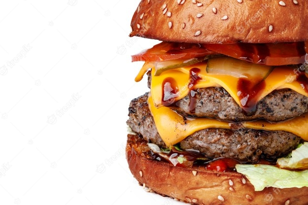

Restaurante

"LA QUINTA"
Líder en el segmento de restaurantes de servicio rápido,LA QUINTA se
caracteriza por la alta calidad y seguridad alimentaria de sus productos
y servicios.... En México, la red es operada desde 2020 , franquicia maestra
de la marca LA QUINTA en toda América Latina.
CONTACTOS

Christian

Grupo 1507

Programacion web